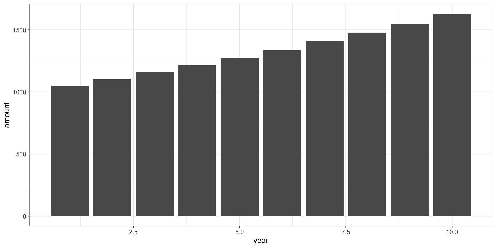

Intro to GNU Make (part 1)
Automating your workflow
Example: Compound Interest
Motivation
- You deposit $1000 in a savings account
- The annual interest rate is 2%
- Assume interest rate won’t change
- How much money will you have one year from now?
The answer to this question is given by the compound interest formula:
\[ \text{deposit} + \text{annual paid interest} = \text{amount in one year} \]
\[ 1000 + 1000 (0.02) = 1000 \times (1 + 0.02) = 1020 \]
Motivation (cont’d)
How much money will you have 2 years from now?
\[ \text{amount year 1} + \text{annual paid interest} = \text{amount in year 2} \]
\[ 1020 + 1020 (0.02) = 1020 \times (1 + 0.02) = 1040.40 \]
How much money will you have in 3 years?
\[ \text{amount year 2} + \text{annual paid interest} = \text{amount in year 3} \]
\[ 1040.40 + 1040.40 (0.02) = 1040.40 \times (1 + 0.02) = 1061.208 \]
Motivation (cont’d)
In one year you’ll have:
\[ 1000 \times (1 + 0.02) = 1020 \]
In two years you’ll have:
\[ 1000 \times (1 + 0.02) \times (1 + 0.02) = 1000 \times (1 + 0.02)^2 = 1040.4 \]
In three years you’ll have:
\[ 1000 \times (1 + 0.02) \times (1 + 0.02) \times (1 + 0.02) = 1000 \times (1 + 0.02)^3 = 1061.208 \]
Future Value
In \(n\) years you’ll have:
\[ 1000 \times (1 + 0.02)^n \]
Future Value formula
\[ FV = P \times (1 + r)^n \]
- \(FV\) = Future Value
- \(P\) = Principal (the initial deposit)
- \(r\) = Annual rate of return (interest rate)
- \(n\) = Number of years
Example A
Example A
[1] 1628.895Example B
Example B
[1] 1050.000 1102.500 1157.625 1215.506 1276.282 1340.096 1407.100 1477.455
[9] 1551.328 1628.895Example B
Example B

Sample Project
Sample project future_value
- Suppose we have a directory
future_value/ - This directory contains a quarto file
doc.qmd - The qmd file has code to compute future value (based on our working example)
File structure (at the beginning)
GNU Make
File structure (at the beginning)
About GNU Make
GNU Make, commonly known as make, is a Unix tool that is part of the GNU Project.
To work with Make you write a text file with the name
Makefile, typically referred to as the makefile.Notice that
Makefilehas not file extensions!
What’s in a Makefile?
A makefile is formed by rules that have the following structure:
Basic rule syntax
Let’s go back to our future value example
Let’s go back to our future value example
Let’s go back to our future value example
doc.html: target or output filedoc.qmd: dependency or input filequarto render doc.qmd: command to create target
Generate PDF output
What if we wanted to generate an output document in PDF format?
doc.pdf: target or output filedoc.qmd: dependency or input filequarto render doc.pdf: command to create target
Various Rules
More than one rule
Say we want to create 2 outputs: HTML and PDF docs
More than one rule
Say we want to create 2 outputs: HTML and PDF docs
More than one rule
Say we want to create 2 outputs: HTML and PDF docs
Makefile
Running make will generate both outputs
More than one rule
Say we want to create 2 outputs: HTML and PDF docs
Makefile
Phony Targets
Phony Targets
By default, Makefile targets are file targets
This means that targets are used to build files from other files (i.e. the dependencies)
This implies that Make assumes the target of a rule is a file.
There are occasions, however, when a given target is not really a file, but simply the name of a recipe
The most common example is the
alltarget
Phony target all
Makefile
The first target
allis not the name of a file;It is simply a convenient “label” to indicate a series of dependencies.
This type of target is known in Make terminology as a phony target.
Phony meaning “not a real file”.
Phony target all
The convention is to explicitly declare a phony target by making it a prerequisite of the special target .PHONY as follows:
Phony target all
The convention is to explicitly declare a phony target by making it a prerequisite of the special target .PHONY as follows:
Phony target all
The convention is to explicitly declare a phony target by making it a prerequisite of the special target .PHONY as follows:
Declaring phony targets
Why do we declare phony targets?
Declaration of phony targets is important because of two main reasons:
to avoid a conflict with a file of the same name, and
to improve performance
Phony target clean
Another common phony target is the so-called
cleantargetThis is used to indicate a recipe for “cleaning” a directory from secondary files typically generated after some compilation process.
Also, the
cleantarget is also commonly used to remove output files.
Phony target clean
Here’s what our Makefile could look like with phony targets all and clean:
Note that clean has no dependencies. Therefore, the target clean will be always out-of-date. So whenever you run make clean, it will run independent from the state of the file system.
Various Dependencies
More than one input
Suppose we have an R script file functions.R with the code of the future value formula.
And assume that doc.qmd “depends” on functions.R. In other words, there’s a code cell in the qmd file that loads the code in functions.R
More than one input
The file structure now looks like this:
Technically speaking:
doc.htmlnow depends on bothdoc.qmdandfunctions.Rdoc.pdfalso depends on bothdoc.qmdandfunctions.R
More than one input
More than one input
Here’s what our Makefile could look like:
More than one input
Here’s what our Makefile could look like:
More than one input
Here’s what our Makefile could look like:
More than one input
Here’s what our Makefile could look like: